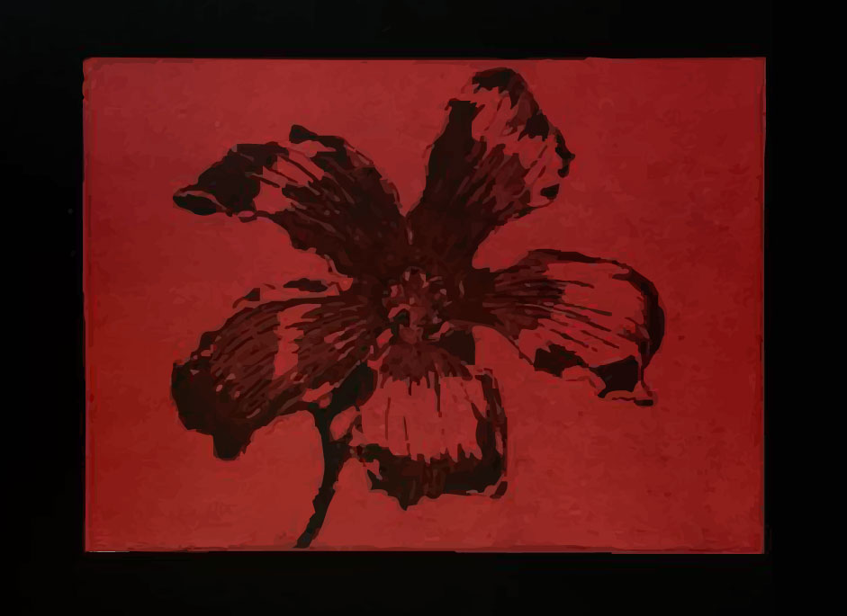

Isabela Barrena

Estoy cursando mi último año de la carrera de Diseño Audiovisual e Ilustración en Udit. Me apasiona el diseño gráfico y el diseño editorial. Me considero una persona muy sociable y alegre, no me cuesta adaptarme a diferentes situaciones y trabajo bien bajo estrés y también me considero una persona resolutiva.
Mis estudios: Título de Bachillerato científico en Colegio San Gabriel. Cursando Diseño Audiovisual e Ilustración en Udit.
Aptitudes: Soy una persona trabajadora, creativa y resolutiva, me adapto rápido al entorno de trabajo. Soy una persona empática, comunicativa y con grandes habilidades para el trabajo en equipo.